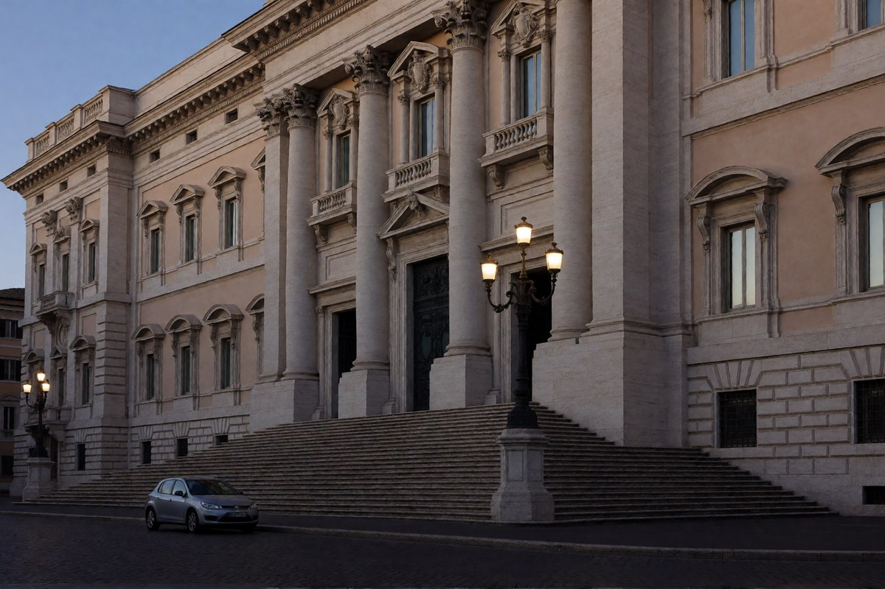

Sicilia · 16 novembre 2026
Castiglione torna ai domiciliari: la Cassazione respinge il ricorso

Nell'inchiesta antimafia Mercurio l'accusa è di un patto elettorale con la famiglia Santapaola-Ercolano. Arrestato nel 2025, poi scarcerato e tornato all'Assemblea, ora rientra agli arresti.
di Franco Zanghì
Giuseppe Castiglione, deputato dell'Assemblea regionale siciliana per i Popolari e Autonomisti, dovrà tornare agli arresti domiciliari. Lo hanno deciso i giudici della Corte di Cassazione, respingendo il ricorso presentato dai suoi legali, gli avvocati Salvo Pace e Carmelo Peluso. La notizia è dell'ANSA, lunedì 16 novembre.
Castiglione è stato anche componente della commissione regionale Antimafia dell'Ars.
L'accusa
L'inchiesta è della Procura di Catania e si chiama Mercurio. Secondo l'accusa, Castiglione avrebbe stretto un patto elettorale con alcuni esponenti della famiglia di Cosa nostra dei Santapaola-Ercolano per assicurarsi l'elezione nel 2022: voti in cambio di disponibilità, nella ricostruzione dei pubblici ministeri.
La famiglia Santapaola-Ercolano è il nucleo storico di Cosa nostra a Catania, e compare da decenni nelle inchieste della Direzione distrettuale antimafia sul rapporto fra clan e politica locale.
I passaggi della vicenda cautelare
Castiglione era stato arrestato nel febbraio del 2025. Nell'aprile del 2026 il giudice per le indagini preliminari gli aveva revocato i domiciliari, e il deputato aveva ripreso il proprio posto all'Ars. La Procura aveva però impugnato quel provvedimento, e a luglio il tribunale del Riesame aveva accolto l'appello dei pubblici ministeri, disponendo il ripristino della misura cautelare.
Quella decisione non era immediatamente esecutiva ed era stata impugnata dalla difesa in Cassazione. Ora la Corte ha chiuso il passaggio: ricorso rigettato, e Castiglione torna ai domiciliari. Nei mesi scorsi, nella stessa indagine, è stato rinviato a giudizio.
Il punto
Per Castiglione vale la presunzione d'innocenza fino a sentenza definitiva, e la decisione della Cassazione riguarda la misura cautelare, non il merito dell'accusa, che sarà discusso nel processo. In questa vicenda il seggio all'Ars non è mai stato in discussione: a cambiare, nei mesi, è stata soltanto la possibilità materiale di occuparlo.
Resta sul tavolo una questione che non è giudiziaria ma politica, e che l'Assemblea regionale prima o poi dovrà affrontare: che cosa fa un parlamento quando un suo componente è accusato di aver comprato voti da una famiglia mafiosa, e la misura cautelare va e viene a seconda dei gradi di giudizio.
Fonti
Quanto riportato è l'ipotesi di accusa dell'operazione Mercurio. La decisione della Cassazione riguarda la misura cautelare e non la responsabilità penale: per Giuseppe Castiglione vale la presunzione d'innocenza fino a sentenza definitiva. Versione scritta della notizia uscita sui canali dell'autore il 16 novembre 2026.